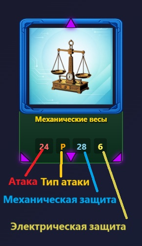
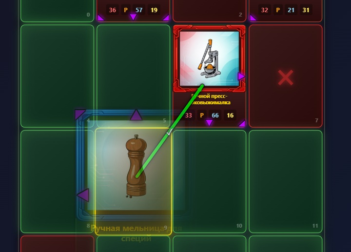
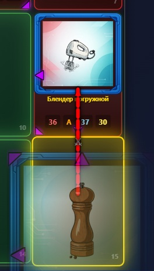
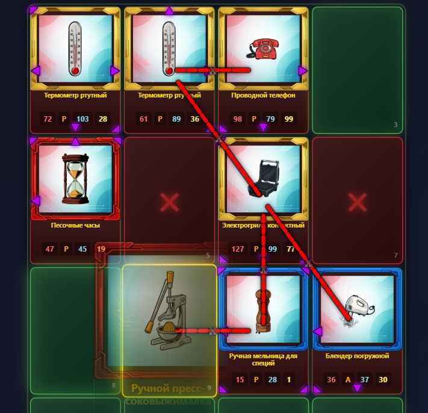

📘 Руководство инженера: Как побеждать в Техно Мастере
Добро пожаловать в Техно Мастер — тактическую карточную дуэль, где ржавая мясорубка может победить суперкомпьютер, если её правильно применить. Ваша цель: захватить как можно больше карт соперника к концу матча на поле 4x4.
1. Анатомия карты
Каждая карта — это уникальное устройство. Чтобы побеждать, нужно понимать, что значат цифры и символы.

⚔️ Атака (Attack): Мощь вашего устройства. Чем выше число, тем больше шанс победить в дуэли.
🛡️ Защита (Defense): У карты их две:
Механическая (M-Def): Защищает от физических ударов (Тип P).
Электрическая (E-Def): Защищает от тока (Тип E) и магии (Тип M).
Тип атаки: Буква рядом с атакой (P, M, E, A, X) показывает, какую защиту врага будет пробивать эта карта.
➡️ Стрелки: Самый важный элемент. Они показывают, куда карта атакует и где она может защищаться.
2. Как захватывать карты?
Есть два способа перекрасить карту врага в свой цвет.
Способ А: Удар в спину (Без боя)
Самый надежный способ. Если ваша карта указывает стрелкой на карту врага, а у врага НЕТ ответной стрелки в вашу сторону — он захватывается мгновенно!
Его защита игнорируется.
Шанс успеха: 100%.
Важно: Такой захват тоже вызывает Комбо.

Способ Б: Битва (Сражение)
Если стрелки смотрят друг на друга («лицом к лицу»), начинается Битва.
Система бросает виртуальные кубики, сравнивая вашу Атаку с соответствующей Защитой врага.
Если вы побеждаете — карта врага становится вашей.
Бонус: Победа в битве запускает цепную реакцию — КОМБО!

3. Великое Комбо
Комбо — это магия, переворачивающая игру.
Если вы захватили карту, эта карта «активируется». Она проверяет свои стрелки и мгновенно захватывает всех соседей-врагов, на которых указывает.
При Комбо защита соседей не работает.
Это может вызвать цепную реакцию и перекрасить всё поле за один ход!

4. Тактика: Кто ходит первым?
В Техно Мастере важна не только сила, но и очередность хода.
🟢 Если вы ходите ПЕРВЫМ
Ваша задача — занять выгодную оборону и не подставиться под Комбо.
Занимайте углы: Карты в углах имеют только 2 открытые стороны. Поставьте туда карту, у которой стрелки смотрят наружу — её будет очень сложно захватить.
Ищите «Островки»: Если на поле есть заблокированные камни, прижимайтесь к ним сторонами без стрелок.
Не будьте агрессивны: Не ставьте свои лучшие карты в центр поля на первом ходу — их окружат и используют против вас.
🔴 Если вы ходите ВТОРЫМ
Вы — охотник. Ваша задача — ловить соперника на ошибках.
Атакуйте уязвимости: Ищите карты врага, у которых нет стрелок в какую-либо сторону, и бейте туда (бесплатный захват).
Готовьте Комбо: Если враг выставил сильную карту с множеством стрелок — это подарок! Попробуйте победить её в Битве, и она сама захватит для вас остальные карты врага.
Последнее слово: У вас последний ход в партии. Это дает вам шанс перевернуть исход матча в самом конце, захватив ключевую карту.
5. Прокачка и Типы
Ваши карты растут!
Участвуя в битвах, карты получают опыт.
Уровень 0 -> 1 -> 2: С каждым уровнем растут характеристики и могут добавиться новые стрелки.
Типы атаки:
P (Physical): Базовая атака.
M / E (Magic/Electric): Хороши против «железяк» с низкой спец-защитой.
X (Flexible): Умная атака. Бьет по самой слабой защите врага.
A (Assault): Элитная атака. Ищет самое слабое место у врага (даже если это его Атака!) и бьет туда.